Portfolio
Here's an overview of the languages, frameworks, and tools in my tech-stack, along with the diverse research areas I'm actively engaged in!
- All
- Web Development
- Cloud DevOps
- Projects & Publications
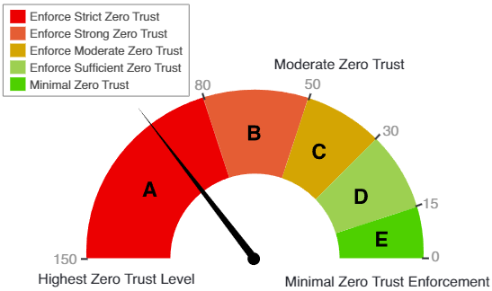
Risk-based Zero Trust Scale for Tactical Edge Network Environments
2023 IEEE/ACM Symposium on Edge Computing
View Publication
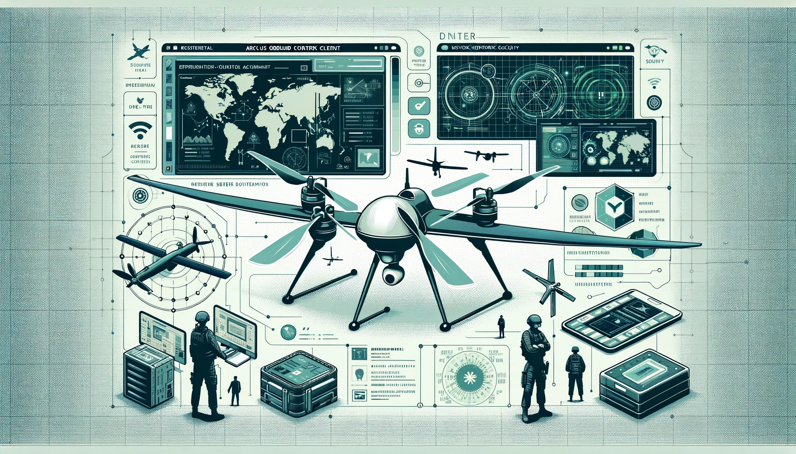
Arculus - Cloud-based Drone Testbed Development
View Details
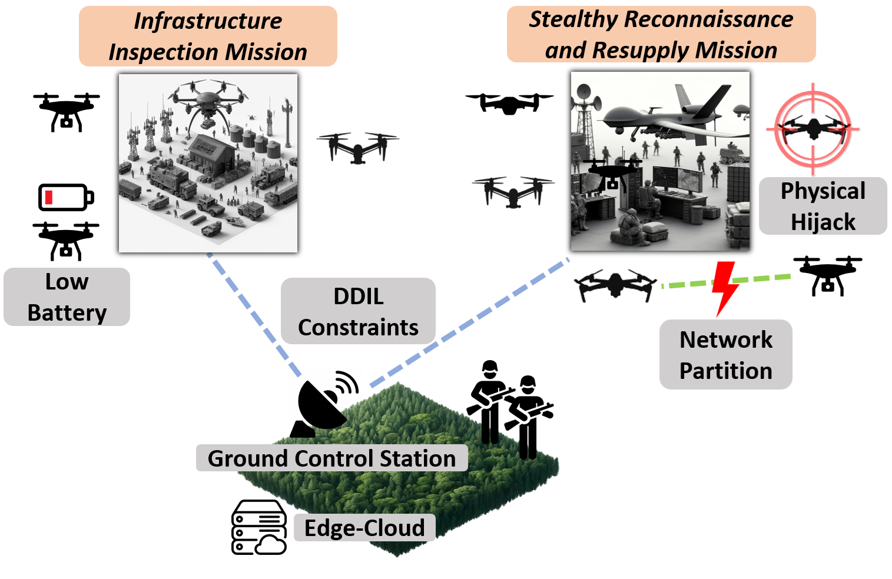
Task-Based Access Control for Computation and Communication in the Tactical Warfighting Edge
Submitted to IEEE MILCOM 2024
View Publication
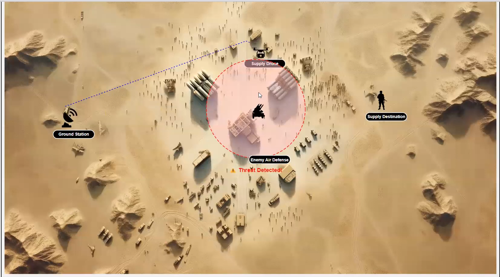
Low-overhead Zero Trust for Mission Planning and Execution at the Tactical Warfighting Edge
Technical Demo at the National Defense University, 2023
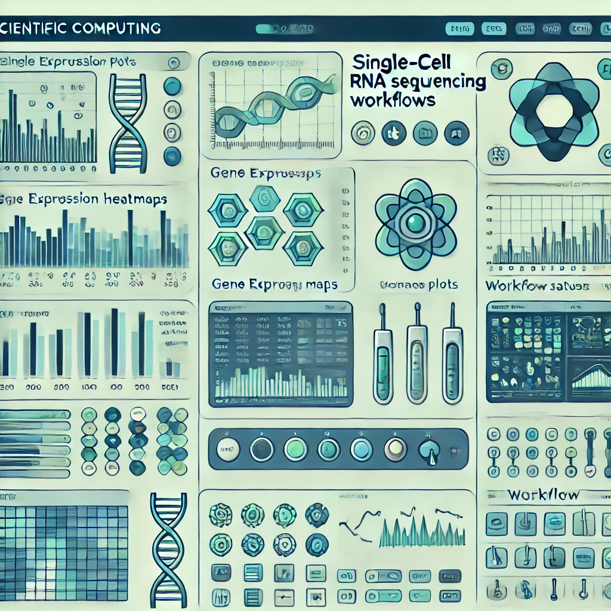
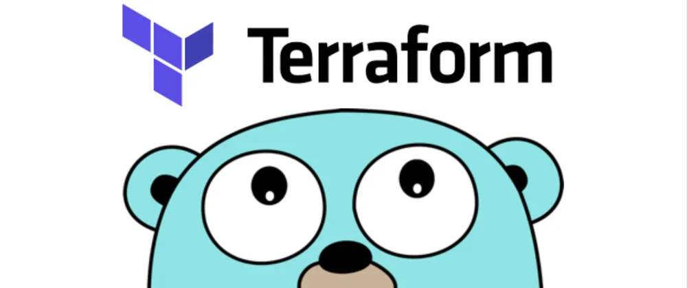
Enhancing Network Security in Collaborative Drone Systems with a Risk-Based Zero Trust Approach
Thesis Research
View Details
React JS
UI Development
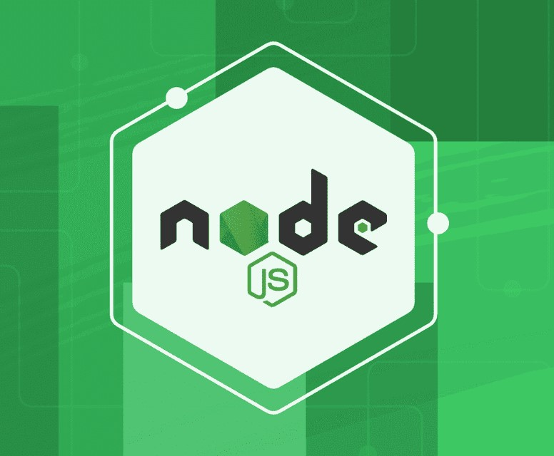
Node JS
RESTful API Development
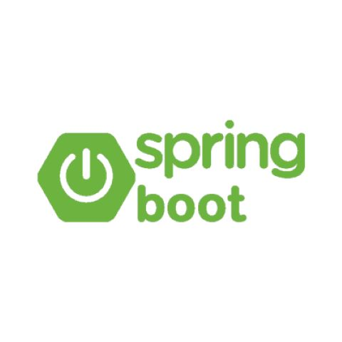
Spring Boot
RESTful API Development
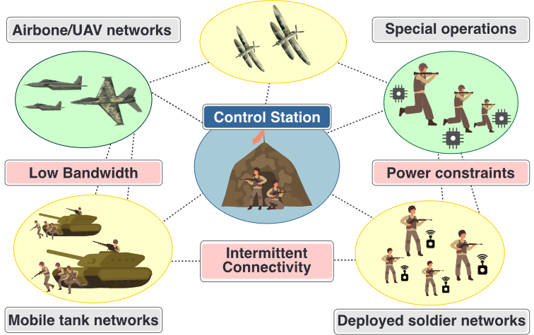
Zero Trust for Situational Awareness Tasks in Tactical Edge Networks
Submitted to IEEE JSAC
View Publication
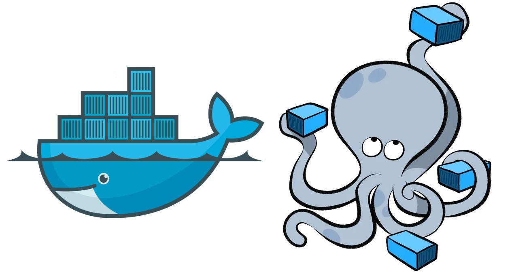
Docker and Docker-Compose
Containerization and Container Orchestration
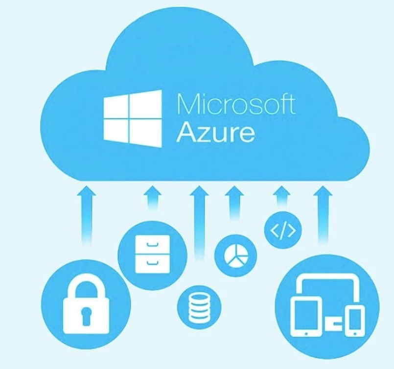
Microsoft Azure
Cloud Services

Python
Data-processing Pipelines, API Development - native and on cloud

Java
RESTful API Development

Amazon Web Services
Cloud-native Development
MySQL, Amazon RDS, PostgreSQL
Relational Databases
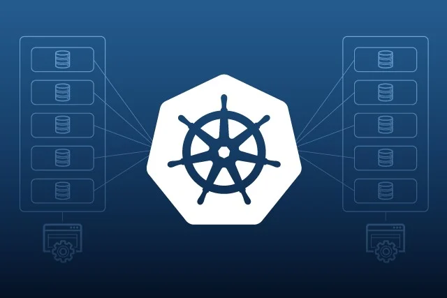
Kubernetes
Containerized Service and Workload Management
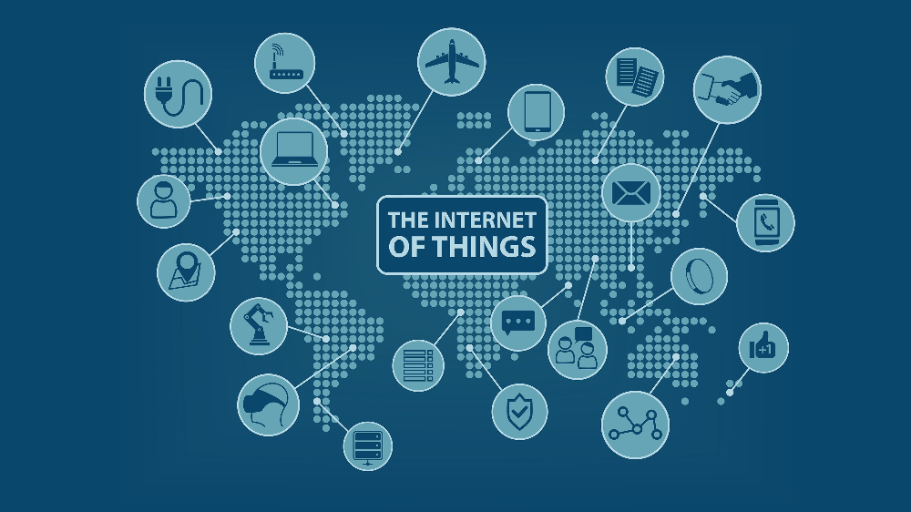
Internet of Things (IoT)
Research Aspect

Terraform
Infrastructure as Code
Network Security
Research Aspect
Shell Scripting
Task Automation in Linux